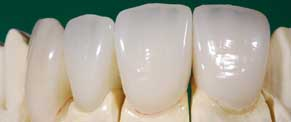

In the earlier days, metal-free restorations outdid metalceramic options in esthetics, but could not offer enough strength. The latest development in all-ceramic material facilitates the clinicians to yield multiple all-ceramic systems. These are used in anterior and posterior portions for balance between them. It becomes difficult for dental professionals to formulate restorations and create lively smiles that ensure vitality.
Today, IPS e.max takes Empress to the max. Designed with simplicity and versatility in focus, IPS e.max allows selection of the most appropriate material - either high strength zirconium oxide or high strength glass ceramic - and the ideal fabrication technique for the case you are completing. A single layering ceramic, IPS e.max Ceram, offers simplicity – ultimately delivering outstanding esthetics, and predictable shade matching even with difficult combination cases.
- Conventionally cementable
- Choice of high strength materials including zirconium oxide or high strength glass ceramic
- Press and CAD/CAM fabrication techniques optimizing both strength and fit
- One layering ceramic delivering one smile chemistry
- Press on Zirconium Oxide technique
- Outstanding esthetics
With IPS e.max one only needs to write one prescription and be confident of getting the strength and esthetics in demand. This treatment is now easily accessible with major hospitals in Mumbai. Select a specific e.max material or simply ask your laboratory for e.max, for example,
- e.max Ceram
- e.max CAD
- e.max ZirCAD
- e.max Press
- e.max ZirPress